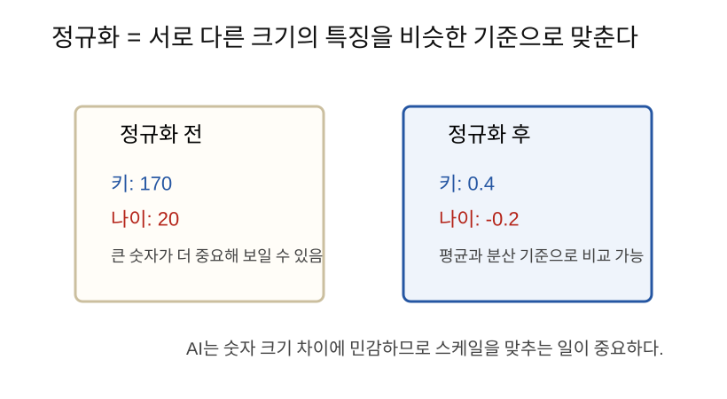
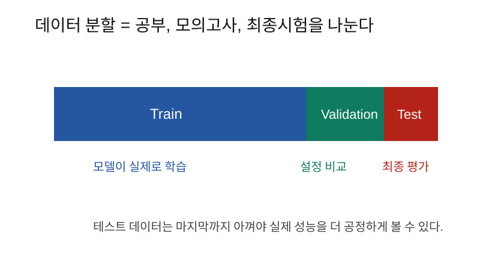

통계는 데이터의 평균, 흩어짐, 관계를 요약하는 방법이고, 데이터 전처리는 AI가 학습하기 좋은 숫자 상태로 데이터를 정리하는 과정이다.
AI는 데이터에서 규칙을 배운다. 그런데 데이터가 지저분하거나 숫자 크기가 너무 다르면 모델이 엉뚱한 방향으로 학습할 수 있다.
예를 들어 사람 정보를 숫자로 표현한다고 하자.
키: 170
나이: 20
소득: 50000000소득 숫자가 너무 커서 모델이 소득만 지나치게 중요하게 볼 수 있다. 그래서 데이터의 스케일을 맞추고, 평균과 분산을 확인하고, 학습용과 평가용 데이터를 나누는 작업이 필요하다.
평균은 데이터의 대표값이다.
평균 = 전체 합 / 개수예를 들어 시험 점수가 다음과 같다고 하자.
[70, 80, 90]평균은 다음과 같다.
(70 + 80 + 90) / 3 = 80AI에서는 평균을 통해 데이터가 어느 위치에 모여 있는지 본다.
분산은 데이터가 평균에서 얼마나 퍼져 있는지 나타낸다.
점수가 다음처럼 모여 있으면 퍼짐이 작다.
[78, 80, 82]점수가 다음처럼 흩어져 있으면 퍼짐이 크다.
[40, 80, 120]표준편차는 분산에 루트를 씌운 값이다. 실무에서는 표준편차가 더 직관적이다.
표준편차가 작다 = 값들이 평균 근처에 모여 있다.
표준편차가 크다 = 값들이 넓게 퍼져 있다.정규화는 서로 다른 크기의 숫자를 비슷한 기준으로 맞추는 작업이다.

대표적인 방법은 평균을 빼고 표준편차로 나누는 것이다.
z = (x - 평균) / 표준편차이렇게 하면 데이터가 대략 다음처럼 바뀐다.
평균 근처 값 -> 0 근처
평균보다 큰 값 -> 양수
평균보다 작은 값 -> 음수특징마다 숫자 크기가 다르면 학습이 불안정해질 수 있다.
예를 들어,
키: 170
나이: 20
소득: 50000000모델 입장에서는 소득 숫자가 압도적으로 크다. 하지만 숫자가 크다고 항상 더 중요한 특징은 아니다.
정규화는 모델이 특징들을 더 공정하게 비교하도록 돕는다.
상관관계는 두 값이 함께 움직이는 정도다.
예를 들어 공부 시간이 늘수록 시험 점수가 오르는 경향이 있으면 양의 상관관계다.
공부 시간 증가 -> 점수 증가반대로 운동 시간이 늘수록 체지방률이 줄어드는 경향이 있으면 음의 상관관계다.
운동 시간 증가 -> 체지방률 감소단, 상관관계가 있다고 해서 반드시 원인과 결과라는 뜻은 아니다.
데이터는 보통 세 부분으로 나눈다.

| 구분 | 역할 |
|---|---|
| Train | 모델이 직접 학습하는 데이터 |
| Validation | 모델 설정을 비교하는 데이터 |
| Test | 마지막에 성능을 평가하는 데이터 |
비유하면 다음과 같다.
Train = 교과서와 문제집
Validation = 모의고사
Test = 최종 시험과적합은 모델이 훈련 데이터에 너무 맞춰져서 새로운 데이터에는 약해지는 현상이다.
예를 들어 문제집 답을 외운 학생은 같은 문제는 잘 풀지만, 새 문제가 나오면 약할 수 있다.
AI도 마찬가지다.
Train 성능은 매우 좋음
Validation/Test 성능은 나쁨이 경우 과적합을 의심할 수 있다.
결측치는 비어 있는 값이다.
나이: 없음
소득: 없음이상치는 다른 값들과 너무 동떨어진 값이다.
나이: 999
키: 300cm이런 값은 모델 학습을 망칠 수 있으므로 처리해야 한다.
대표적인 처리 방법:
import numpy as np
x = np.array([70, 80, 90])
mean = x.mean()
std = x.std()
z = (x - mean) / std
print(mean) # 80.0
print(std)
print(z)train/test 분할의 간단한 예:
data = list(range(100))
train = data[:80]
test = data[80:]
print(len(train), len(test)) # 80 20| 헷갈리는 말 | 쉽게 풀어쓴 말 |
|---|---|
| 평균 | 대표값 |
| 분산 | 평균에서 얼마나 퍼졌는지 |
| 표준편차 | 퍼짐을 원래 단위에 가깝게 표현한 값 |
| 정규화 | 숫자 크기를 비슷한 기준으로 맞추는 작업 |
| 상관관계 | 두 값이 함께 움직이는 정도 |
| 과적합 | 훈련 데이터만 지나치게 잘 맞는 상태 |
AI 학습은 데이터 품질에 크게 영향을 받는다. 평균, 분산, 표준편차는 데이터를 이해하는 기본 도구이고, 정규화는 학습을 안정적으로 만든다. train, validation, test를 나누는 것은 모델이 새 데이터에서도 잘 작동하는지 확인하기 위한 핵심 절차다.
다음 노트: 10_Entropy와CrossEntropy